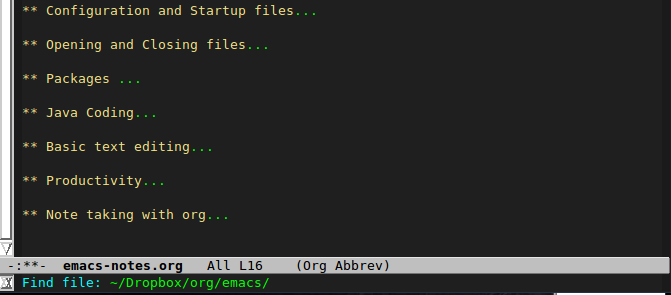
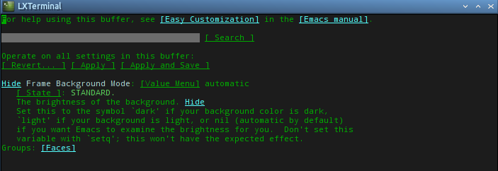

Emacs setup
Setup
Emacs is fairly ubiquitous already. It has been around for a long time so you can pretty much get it no matter what your choice of platform is. But it is pretty at home with UNIXes and the Linuxes.
For Linux, the sudo-apt-get install emacs-nox should do it. This will work for Debian and Debian-ish platforms. I haven't used RedHat or it's derivatives for a while now but you may have to use their yum package manager. I specified emacs-nox because I don't want to install the GTK or X11 version of emacs – nox means "no x windows".
In OSX, the brew install emacs is what you will use if you use the HomeBrew package manager. You can use macports of Fink if that is what you use as a package manager.
Windows users can download the binary distributions from the Emacs site.
In OSX, you need to a little bit more setup because OSX comes with an outdated version of GNU emacs, so you may have to delete that first and then do something inside /usr/bin/
$ sudo rm /usr/bin/emacs
$ sudo rm -fvr /usr/share/emacs
$ sudo ln -s /usr/local/bin/emacs /usr/bin/emacs
You can now launch emacs from any terminal window.
Configuration and Startup files
Generally, emacs reads the files ~/.emacs and ~/.emacs.d/init.el. This is where you can write your startup settings e.g. setting of color theme, treatment of line wraps, how to treat tabs (or spaces) etc.
Emacs uses lisp, actually a specific kind of lisp called elisp which stands for emacs lisp. This the language you will use if you want to monkey around emacs and bend it to submission. Don't worry too much if you don't know much about lisp or don't know it all. The emacs community is large. There is no shortage of blog post and Gists which features ready made emacs init files that you can mindlessly cut and paste into your own.
If your needs are simple, e.g. convert the tabs to spaces, set the number of spaces for a tab, write source codes using the K & R convention, write your diary and convert it to HTML, a quick Google search about these things will usually do the fix for you. There are pretty standard ways of accomplishing these things in the emacs init files.
Opening and Closing files
After you launched emacs, you can open a file by pressing C x C f that means, press the control key, press x, don't let go of the control key, and press f. Emacs will wait for you to input a name of the file. Pay attention to input area in the lower left of the emacs window. You will type the name of the file and it's path in there.

You can close the file by using the command C x C c that means press CTRL x but don't let the CTRL key go. While the CTRL is still depressed, press s. That will save the file. If you want to save the file using another name (Save As), the command is C x C w.
C x C c will exit emacs. In case you have unsaved work, emacs won't let you leave without confirming your action. It will nag you whether you want to save any unsaved work etc.
Packages
Emacs has a lively community of users and contributors. If there is a functionality you need and it's not built-in with emacs, chances are somebody built a package for that. So you need to know how to get additional software for emacs.
Software packages for emacs are lisp files. They have the extension .el and there are plenty of sources for that. The more popular sources elpa, marmalade and melpa . There are others but these three seems to be favorites.
To use these software sources, you need to tell emacs about their existence. That is done via the init files. So if you already have installed emacs, go ahead and use it for edit your init files. You can follow these steps.
$ touch ~/.emacs
$ emacs ~/.emacs
Once emacs has opened the .emacs init file, put the following codes inside
(setq package-archives '(("gnu" . "http://elpa.gnu.org/packages/")
("marmalade" . "http://marmalade-repo.org/packages/")
("melpa" . "http://melpa.milkbox.net/packages/")))
These settings and URL values were lifted straight from the EmacsWiki site. There are other ways of configuring the package manager on that site, you should go visit that page.
Save the file by pressing CTRL + x don't let the CTRL key go, keep it pressed, then press s. In emacs lingo, you will see this command written as C - x C - s. The C stands for the CTRL key. So remember that when you see this notation, it means press CTRL key then press x after that press s without letting go of the CTRL key. That command saves the contents of your current buffer 1 to the file ~.emacs/.
You have to exit your emacs session and start it over again. The restart is necessary because emacs needs to read the new entries on it's init file. To exit emacs, press C - x C - c. You already know what that notation means. That is the command to exit emacs.
Now start emacs again and then press ESC - x, you can also press ALT - x, it will yield the same result. Pay attention to message window on left lower portion of emacs, it says M - x. It's waiting for you to type something. It's waiting for a command. Now type list-packages RET (RET means return key or entery key). It might take a little while because emacs is communicating with online repositories. It's grabbing a list of available software which it will show you onscreen in a little while.
Take the time to browse through them, if something catches your fancy, go ahead and position the cursor on that list entry then press i, that means mark it for installation. Then press x to install what was marked.
When you are all done. Press q to quit the screen which lists the software packages.
Java Coding
You need to define a hook when emacs enters Java mode — when it opens a .java source file. Then set theh appropriate variables inside the hook
- Use spaces in place of tabs –
indent-tabs-mode nil - Use 2 spaces for indenting code –
c-basic-offset 2 - Use the Kernighan & Ritchie convention for aligning the curly braces –
c-default-style k&r
Below is the copy-pastable setting that you can plunk in the .emacs init file
(add-hook 'java-mode-hook
(lambda()
" Treat JDK 1.5 annotations as comments"
(setq c-comment-start-regexp "(@|/(/|[*][*]?))")
(modify-syntax-entry ?@ "<b" java-mode-syntax-table)))
(add-hook 'java-mode-hook (lambda ()
(setq c-default-style "k&r" c-basic-offset 2 tab-width 2 indent-tabs-mode nil)))
The c-default-style k&r means it will use the curly braces alignment of Kernighan and Ritchie, the opening curly brace is at the right most side, immediately following the closing parens and the closing curly brace is flushed at the left side.
The K & R style isn't the only one you can use. The other indenting styles are well documented in EmacsWiki/Indenting C2 and on WikiPedia/IndentStyle3
Text expansion, AutoCorrection
(setq save abbrevs nil)
(setq-default abbrev-mode t)
(load "~/.emacs.d/abbrev_defs")
Note taking with org
You must download org-mode using the package manager (package.el), get org-mode from there either from elpa, melpa or marmalade
To publish in HTML, M-x org-html-export-to-html, that's it or you might want to look at this http://orgmode.org/worg/org-tutorials/org-publish-html-tutorial.html
Color problem with tmux
TMUX messes with the color scheme that is setup in emacs. You need to fix the color scheme in tmux. There are plenty of ways to do this. I would think there is a way in .tmux.conf, the TMUX section of ArchWiki has some detailed advice on this one. Or you can simply pass the TERM value when you start tmux. In the .bashrc or or .bashprofile add an alias to tmux
alias tmux="TERM=screen-256color-bce tmux"
Now open tmux as you normally would e.g. tmux new -s coding then open emacs. TMUX shouldn't be messing around with the emacs color-scheme now.
Another route you can try is to customise the frame-background-mode variable. Try the three different settings (0 = light, 1 = dark and 2 = automatic). Invoke the customise variable command M x customize-variable RET then type frame-background-mode RET. You will see the following screen.

Go to value menu, the RET. Choose either 0,1 or 2. Then go to the State menu and choose from one of the options. You can set the value of background just for the current session or you can choose to save it for future sessions.
Footnotes:
Think of a buffer as a scratch pad. It's an editing session, there is a subtle difference between a physical file and a buffer, but for now, think of them as the same thing. If you are more comfortable with the notion that you are editing a "file" instead of buffer, then go ahead with that. Eventually, when you have used emacs enough, you will realize the difference.